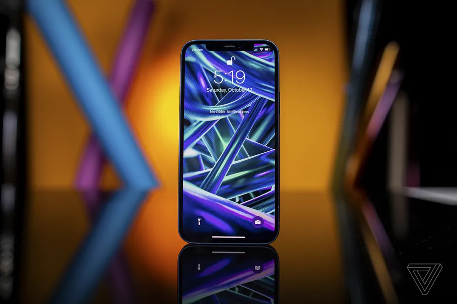
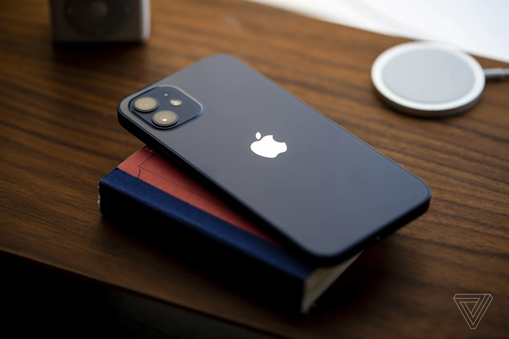
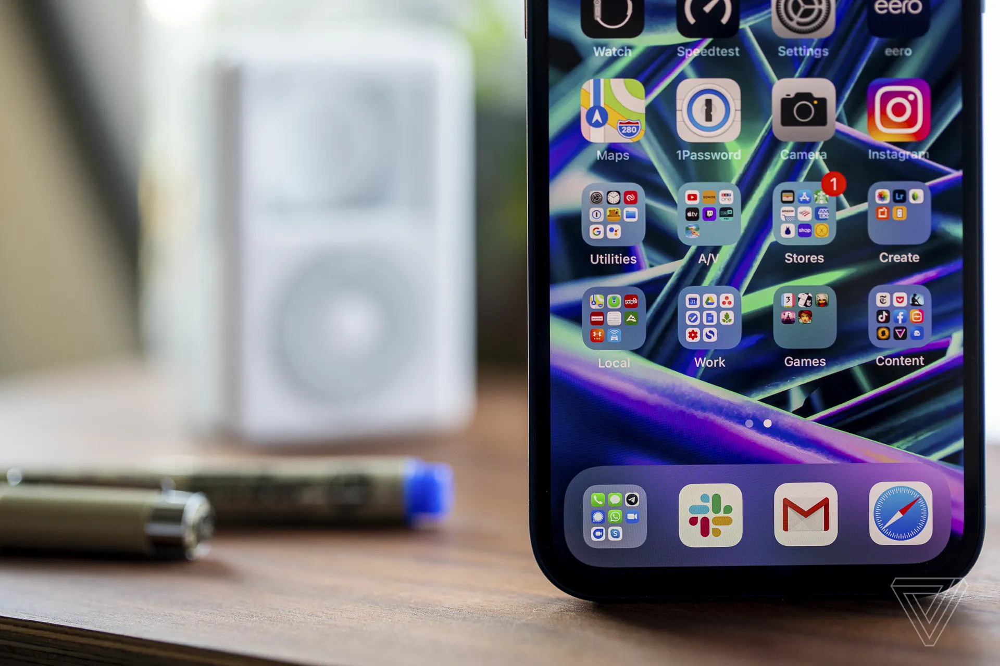

APPLE IPHONE 12 REVIEW
It’s the one you should get unless you’re waiting for the Max or mini
More than most years, there are a lot of things that are new in the iPhone 12. Apple has loaded in the usual upgrades like a faster processor and improved camera, but that’s something we’ve come to expect. In addition to all of that, there’s a new design, a new OLED screen, an entirely new charging and accessory ecosystem with MagSafe, and, of course, 5G.
It seems obvious that both Apple and its carrier partners are trying to align to make this a supercycle for upgrades. All of that new stuff is also paired with both a higher price ($829 for the base 64GB model) and discounts and heavily marketed carrier trade-in and installment plans. In the midst of a pandemic-induced economic downturn, it could be a hard sell.
It’s easy to recommend the default iPhone for the times when you need a new phone anyway, but it’s much more difficult to say whether all of this new stuff adds up to something that could compel you to upgrade earlier than you’d planned.
If you look at the aluminum rail, you’ll see a bunch of antenna lines and even a small plastic section on the side for the Ultra Wideband (UWB) mmWave antenna. They break up the symmetry a bit (especially on the bottom), but it doesn’t bother me. I’ve also become notch-blind at this point, but I should note that Face ID still requires a very big cutout at the top of the screen.
One of the reasons Apple was able to reduce the size of the iPhone 12 is that it has switched over to an OLED screen. That helps reduce the bezels and also keeps them perfect even all the way around the phone, while at the same time keeping the actual viewable screen the same 6.1 inches as the iPhone 11. I prefer the look of OLED to LCD because of its blacker blacks, so I’ve been waiting for this chang.
Along with the switch to OLED, Apple has also increased the pixel count to 1170 x 2532. If you haven’t been immersed in smartphone tech discussions, you have blessedly avoided the complaining that previous iPhones didn’t even technically hit 1080p. Now they have, and those complaints can finally cease.
I’m less in favor of the decision to stick to the Lightning port for charging. A major redesign is an opportunity to switch over to the more common USB-C port, the same port that Apple’s own computers and tablets use along with every other Android phone and many, many other gadgets. The fact that Apple didn’t have the courage to do so tells me that its long-term plans may have more to do with MagSafe than anything else. I don’t love Lightning, but I have to admit it’s better than literally nothing when it comes to wired charging.